Pepsi Ramazon «Махалля» — раскадровка и Seedance
Ролик 40 секунд = две генерации Seedance 2.5 по 20 секунд. 36 коротких кадров, склейки на долю, толпа, соседи дарят друг другу Pepsi, ребята играют руками.
Скачать всё одним архивомЛисты раскадровки (6 шт.)План
| Часть | Время ролика | Что внутри |
|---|---|---|
| 1 · 20 с | 0–20 с | Ифтар, строки 1–2 за дверью → дверь, «не-не-не» в тишине → строки 3–4 → дробь → дроп на 18 с |
| 2 · 20 с | 20–40 с | QR и Paynet → выигрыши → Kia → хозяин выносит Pepsi, бутылки по кругу → финальные удары и стол → пэкшот |
Склейка частей — на 20,0 с, это ровно граница такта. В монтаже кладём только master40, звук Seedance глушим. Пэкшот Pepsi × Paynet × Kia накладывается на последний кадр (38–40 с).
Раскадровка, часть 1 · 0–20 с
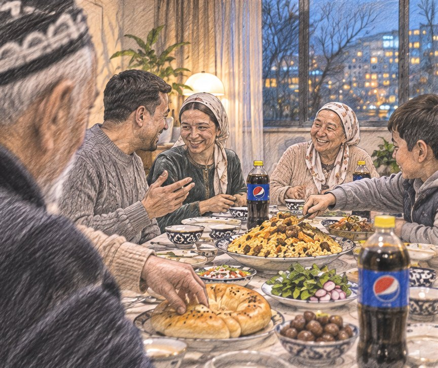
Кадр 10,0–1,5 с
Общий план: семья из 14 человек за столом ифтара — плов, лепёшки, финики, Pepsi. Все смеются.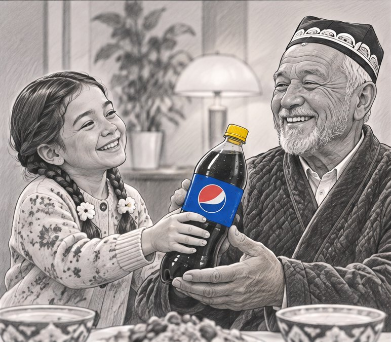
Кадр 21,5–2,5 с
Крупно: внучка протягивает дедушке Pepsi, он берёт двумя руками.
Кадр 32,5–4,0 с
Все оборачиваются к коридору, дети замирают и слушают.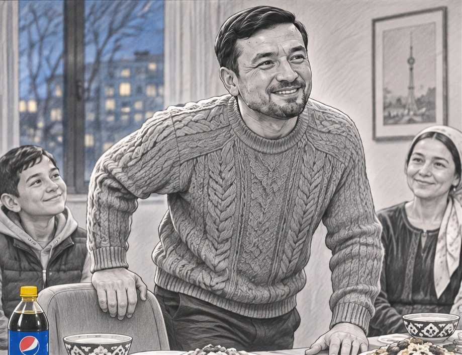
Кадр 44,0–5,5 с
Хозяин понимающе улыбается и встаёт из-за стола.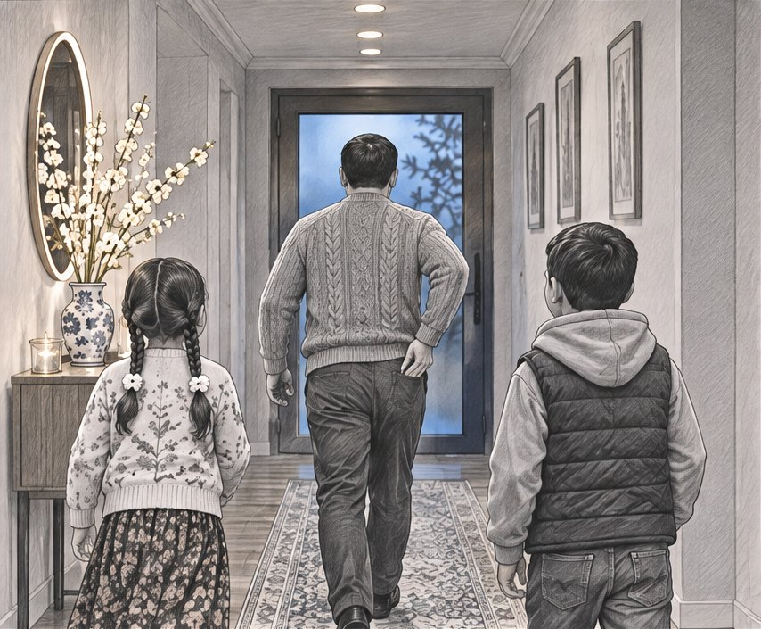
Кадр 55,5–7,0 с
Со спины: идёт по коридору к двери, хлопает по карману, за ним двое детей.
Кадр 67,0–8,0 с
Крупно: достаёт из кармана сложенные купюры.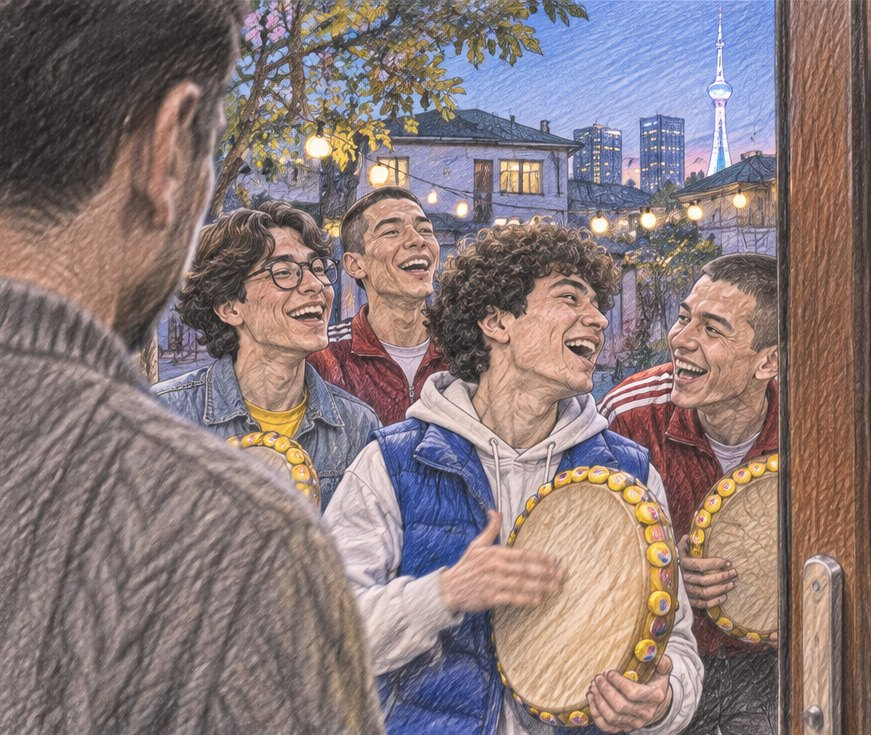
Кадр 78,0–10,0 с
Через плечо хозяина: дверь открывается (8,4 с), на пороге пятеро ребят с дойрами допевают строку.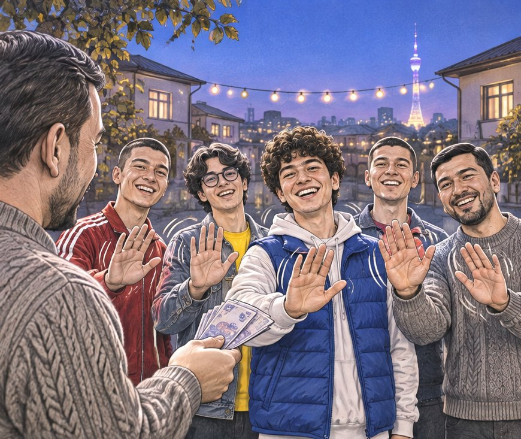
Кадр 810,0–11,2 с
Снаружи: хозяин протягивает деньги, все пятеро улыбаются и машут ладонями: «не-не-не».
Кадр 911,2–12,3 с
Крупно: заводила отводит руку с деньгами и показывает на Pepsi на столе.
Кадр 1012,3–13,3 с
Ребята читают, заводила бьёт ладонью по дойре.
Кадр 1113,3–14,4 с
Хозяин хохочет, за спиной смеётся семья.
Кадр 1214,4–15,4 с
Сверхкрупно: очкарик переворачивает жёлтую крышку — внутри код.
Кадр 1315,4–16,1 с
Хозяин «сдаётся» — поднимает руки и смеётся.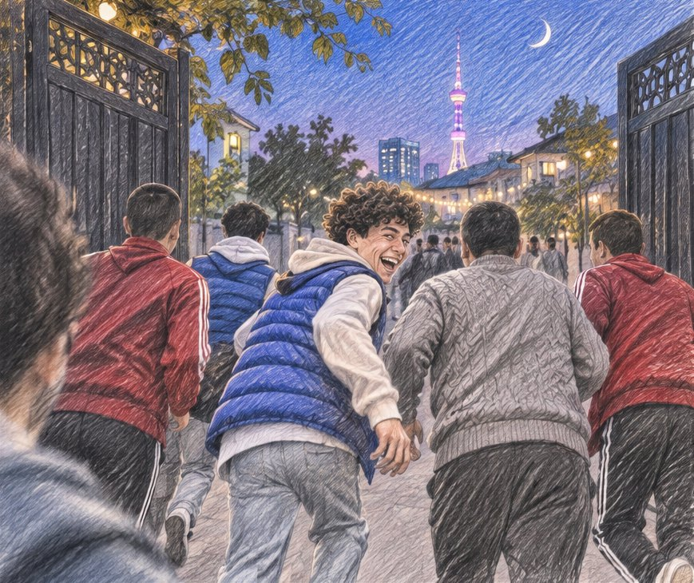
Кадр 1416,1–17,1 с
Ребята выбегают за ворота на улицу, камера бежит за ними.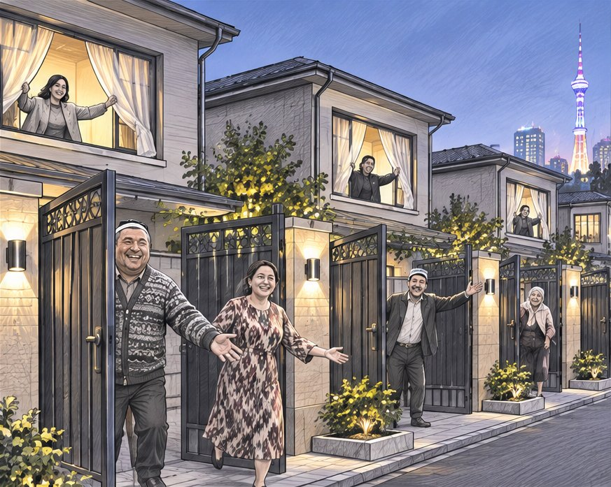
Кадр 1517,1–18,0 с
Загораются окна, отдёргивают шторы, соседи открывают ворота и выходят.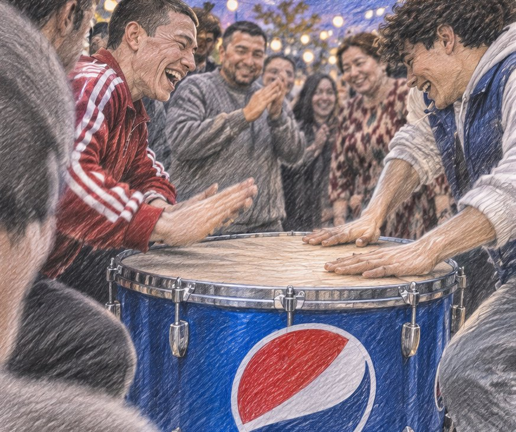
Кадр 1618,0–19,0 с
ДРОП. Сверхкрупно снизу: ладони парня в красной олимпийке бьют по барабану-банке.
Кадр 1719,0–20,0 с
Дядя откручивает крышку Pepsi и переворачивает — внутри код.Раскадровка, часть 2 · 20–40 с

Кадр 1820,0–21,0 с · в части 0,0–1,0
Девушка сканирует QR на этикетке, за ней толпа.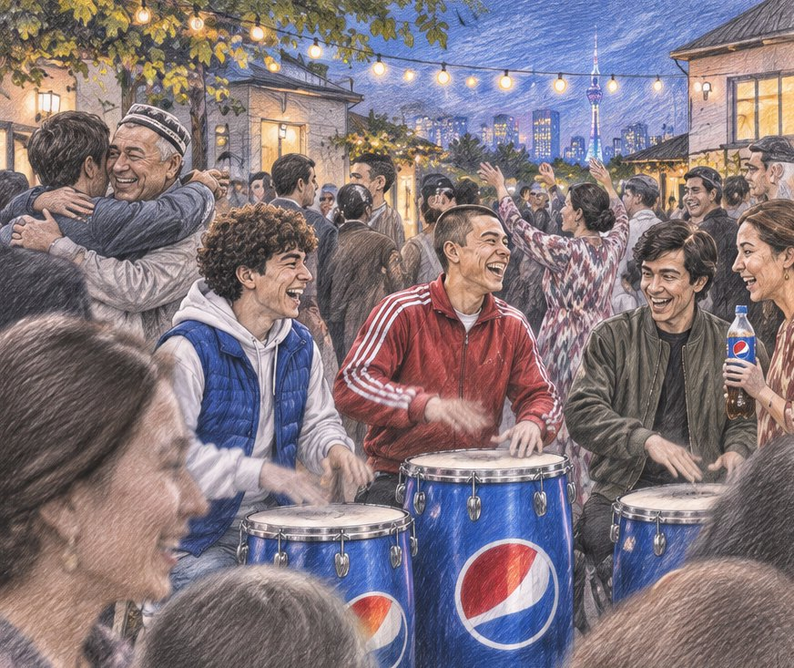
Кадр 1921,0–22,0 с · в части 1,0–2,0
Общий снизу: ребята бьют по барабанам в центре площади, соседи обнимаются и передают Pepsi.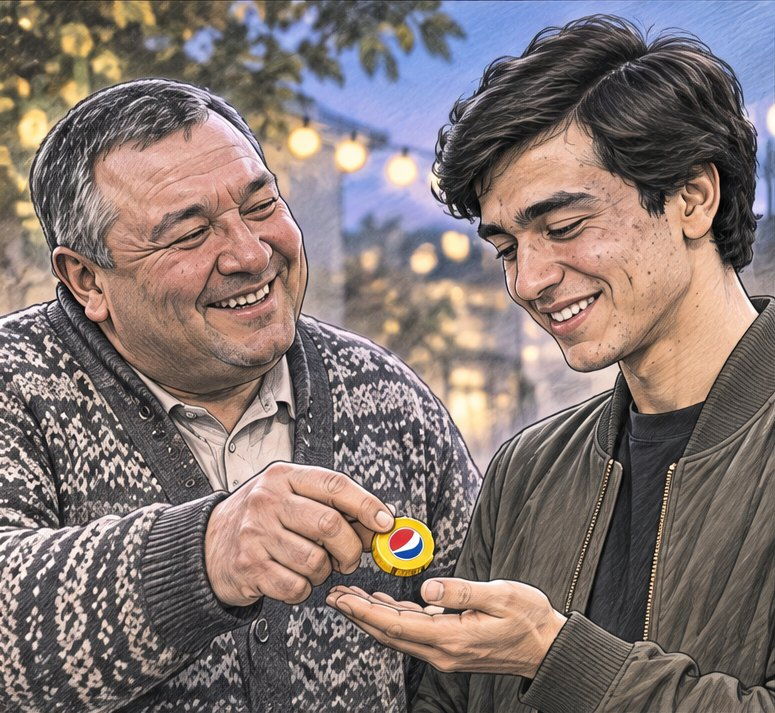
Кадр 2022,0–23,0 с · в части 2,0–3,0
Дядя вкладывает крышку в руку парню в зелёном бомбере.
Кадр 2123,0–23,9 с · в части 3,0–3,9
Через плечо: вводит код в Paynet.
Кадр 2223,9–24,9 с · в части 3,9–4,9
Ребята бьют по дойрам и читают, толпа прыгает.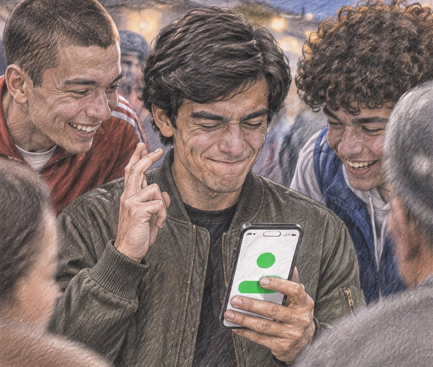
Кадр 2324,9–25,9 с · в части 4,9–5,9
Парень жмёт зелёную кнопку и скрещивает пальцы.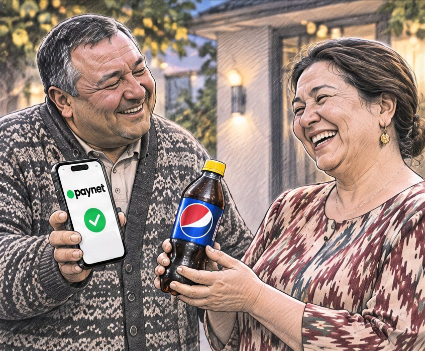
Кадр 2425,9–26,9 с · в части 5,9–6,9
Дядя показывает тёте +5 000, она смеётся, он дарит ей Pepsi.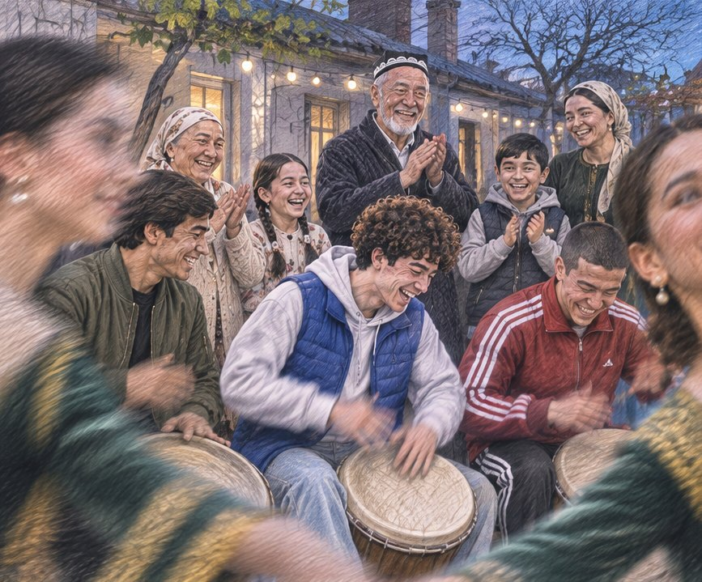
Кадр 2526,9–27,9 с · в части 6,9–7,9
Общий снизу: барабаны, толпа прыгает.
Кадр 2627,9–28,9 с · в части 7,9–8,9
Сверхкрупно: уведомление Paynet +100 000.
Кадр 2728,9–29,8 с · в части 8,9–9,8
Парень сияет, друзья обнимают, сосед протягивает ему Pepsi.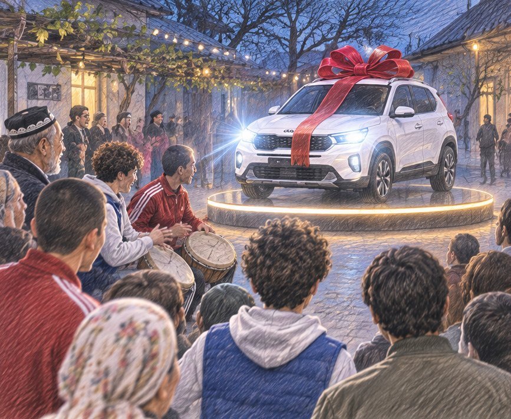
Кадр 2829,8–30,8 с · в части 9,8–10,8
За ребятами вспыхивают фары Kia на подиуме.
Кадр 2930,8–31,8 с · в части 10,8–11,8
Крупно: красный бант на крыше, подиум светится, лес телефонов.
Кадр 3031,8–32,8 с · в части 11,8–12,8
У калитки девушка дарит бабушке Pepsi, та берёт двумя руками.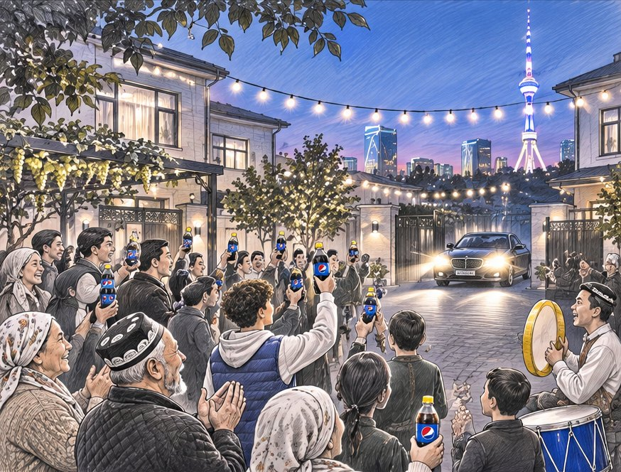
Кадр 3132,8–33,8 с · в части 12,8–13,8
Сверху: вся площадь поворачивается к свету, кричит, чокается бутылками.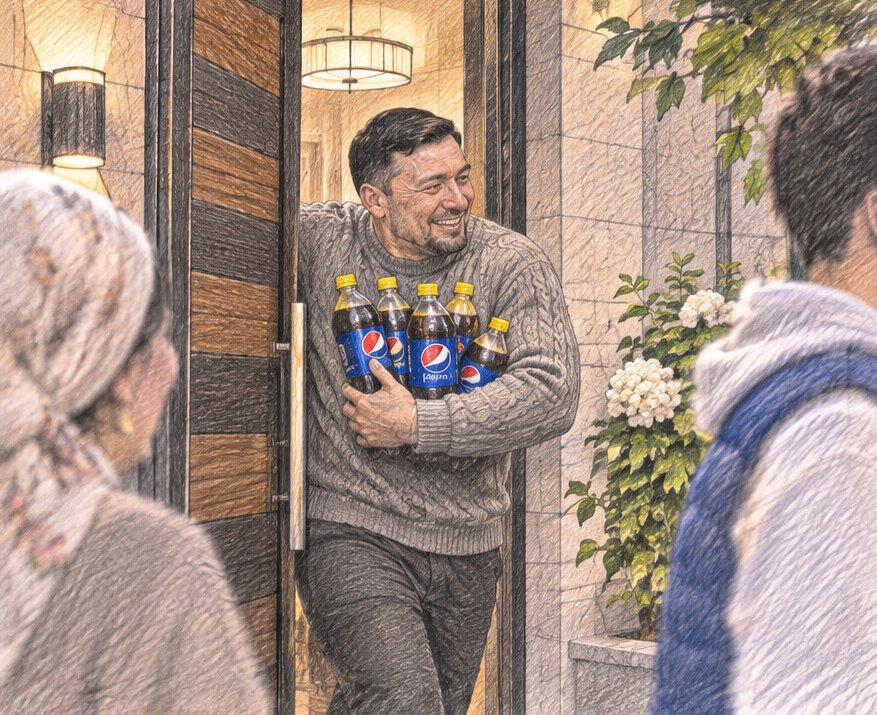
Кадр 3233,8–35,0 с · в части 13,8–15,0
Хозяин выходит из той же двери с охапкой Pepsi.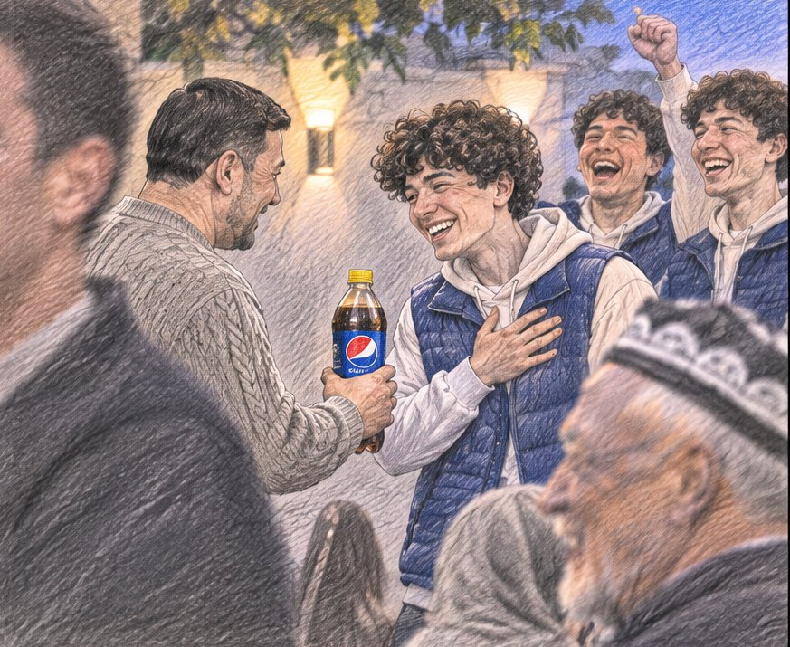
Кадр 3335,0–36,0 с · в части 15,0–16,0
Отдаёт бутылку заводиле, тот прикладывает руку к сердцу, ребята ликуют.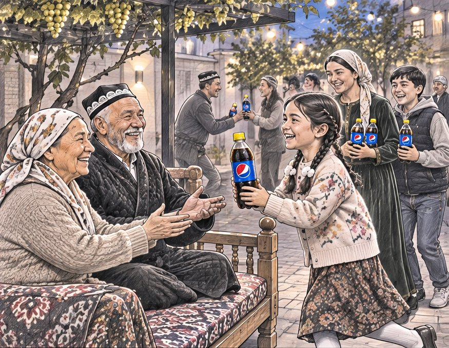
Кадр 3436,0–37,0 с · в части 16,0–17,0
Барабаны стихают. Бутылки идут по рукам, девочка несёт бутылку бабушке с дедушкой на топчан.
Кадр 3537,0–38,0 с · в части 17,0–18,0
Сверху: вся толпа поднимает Pepsi вверх.
Кадр 3638,0–40,0 с · в части 18,0–20,0
Финальные удары. Стол под перголой: Pepsi, жёлтая крышка, лепёшка, финики, чайник; соседи в боке. Пэкшот Pepsi × Paynet × Kia — в монтаже.Промпты Seedance
Часть 1 · Ифтар → дверь → дроп
0–20 с ролика · кадры 1–17 · Seedance 2.5 · Omni Reference · 16:9 · 20 с · звук вкл · без старт-кадра


Часть 2 · Код → призы → Kia → финал
20–40 с ролика · кадры 18–36 · Seedance 2.5 · Omni Reference · 16:9 · 20 с · звук вкл · без старт-кадра
 @image1C01_lead
@image1C01_lead
 @image2C02_red
@image2C02_red
 @image3C03_varsity
@image4C04_denim
@image5C05_navy
@image6C06_father
@image3C03_varsity
@image4C04_denim
@image5C05_navy
@image6C06_father
 @image7C07_family
@image7C07_family
 @image8C08_uncle_auntie
@image8C08_uncle_auntie
 @image9C09_girl
@image9C09_girl
 @image10C10_youngman
@image10C10_youngman
 @image11L01_mahalla
@image11L01_mahalla
 @image12P01_drums_doiras
@image12P01_drums_doiras
 @image13P02_pepsi_cap
@image13P02_pepsi_cap
 @image14P03_paynet_code
@image14P03_paynet_code
 @image15P04_paynet_win
@image15P04_paynet_win
 @image16P05_kia_podium
@audio1part2.mp3
@image16P05_kia_podium
@audio1part2.mp3Аудио
- master40.mp3
Мастер для монтажа, ровно 40 с: строки 1–2 «за дверью», дверь открывается на 8,4 с, пауза-жесты 9,95–12,33 с, дроп на 18,0 с - master40.wav
То же в WAV - part1.mp3
Аудио-реф части 1 (0–20 с мастера) - part2.mp3
Аудио-реф части 2 (20–40 с мастера)
Референсы
Карточки персонажей, локаций и предметов.
Персонажи
Локации
Предметы
Если что-то пошло не так
- Seedance склеил меньше кадров, чем написано — нормально: в монтаже режем дальше, раскадровка показывает, что где.
- Путает ребят между собой — оставь карточки только заводилы, красного и очкарика, остальных он нарисует по описанию.
- Сначала черновики 480p (draft), удачные финалим в 1080p.